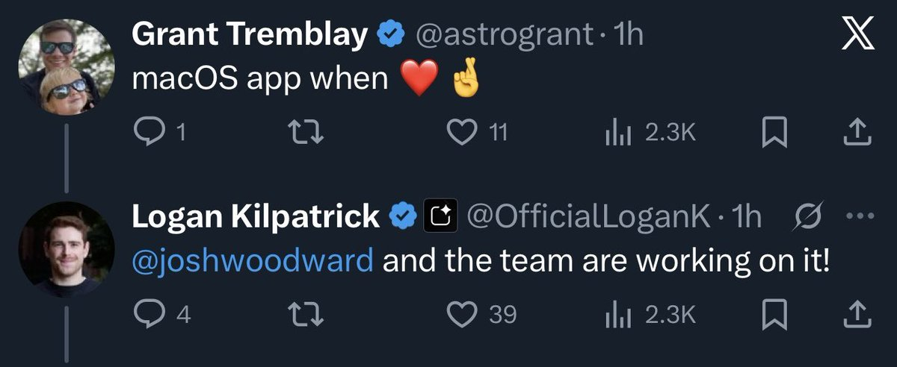

@howie_serious
https://t.co/mLqbcoD33m
谷歌是在尝试做自己的统一的桌面端的，我看挂在Labs里面有一段时间了（至少今年夏天的时候就在了），但仅限少部分地区，似乎也没听见什么宣传的声音

谷歌是在尝试做自己的统一的桌面端的，我看挂在Labs里面有一段时间了（至少今年夏天的时候就在了），但仅限少部分地区，似乎也没听见什么宣传的声音

最近 google ai 模型能力过强，用户增长过快，他们终于开始升级 gemini 的 UI 了。
独立的桌面 app 也在开发中。
但实际上，桌面 app 远远没有 web app 好用。我的 chatgpt mac app 基本吃灰，因为 web app 才能提供 llm 更完整更好的体验。
（如果不做本地 mcp，不操作本地工具，要 桌面 app https://t.co/HpazdU0yxe
独立的桌面 app 也在开发中。
但实际上，桌面 app 远远没有 web app 好用。我的 chatgpt mac app 基本吃灰，因为 web app 才能提供 llm 更完整更好的体验。
（如果不做本地 mcp，不操作本地工具，要 桌面 app https://t.co/HpazdU0yxe